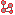
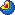

Indice General
 API PHP
API PHP API Javascript
API JavascriptEn esta página
Componentes
Una operación se define en base a componentes. Estos cubren distintos aspectos de una operación, categorizándolos según su función: interface, control o persistencia. El comportamiento particular de los componentes es determinado por:
- La definición usando el editor.
- La extensión PHP del componente.
- La extensión Javascript del componente.
Interface
Los Elementos de interface (ei) son controles gráficos puros:
ei_formulario: Formulario de edición simple y sus
elementos de formulario (efs).
ei_formulario_ml: Formulario de edición de múltiples líneas.
ei_cuadro: Grilla para mostrar y seleccionar datos.
ei_calendario: Calendario para visualizar contenidos diarios y seleccionar días o semanas.
ei_arbol: Visualiza una estructura de árbol en HTML.
ei_archivos: Permite navegar el sistema de archivos del servidor bajo una carpeta dada.
 ei_esquema: Muestra un esquema utilizando GraphViz.
- Comunicación Cliente → Servidor: Cada uno de estos componentes dispara distintos eventos que representan las interacciones del usuario. Por ejemplo a un formulario se le puede definir los eventos Alta, Modificación, Baja y Cancelar. Las capas inferiores toman estos eventos brindando comportamiento a estas acciones, en este caso dándole una lógica de ABM.
- Comunicación Servidor → Cliente: Una vez escuchados todos los eventos se entra en una etapa de configuración de los componentes, preparándolos para la próxima renderización o servicio. Por ejemplo, en el caso de la lógica ABM, durante la configuración se le brindará los datos al formulario, se harán solo-lecutra algunos campos y demás. Finalmente se brindaría el servicio generando el HTML del formulario en cuestión.
Controladores
Controlador de Interface (ci): Contienen otros componentes configurándolos, escuchando sus eventos, agrupándolos en pantallas y determinando la lógica de navegación entre las mismas. Son el nexo entre las capas de persistencia o negocio y la de interface.
 Controlador de Negocio (cn): desacoplan la lógica de la interface de las clases de negocio propias o de los componentes de datos.
Persistencia
Los elementos de persistencia (prefijados como datos) permiten modelar tablas y registros de una base relacional o algún otro medio que maneje datos tabulares, brindando servicios transaccionales a las capas superiores. En estos componentes se describen las estructuras y asociaciones de las tablas involucradas en una operación y la forma en que los registros serán sincronizados al final de la misma.
datos_tabla: Abstracción de una tabla.
datos_relacion: Abstracción de una relación entre tablas.
Administradores de persistencia: Mecanismos de carga y sincronización con un medio de persistencia.